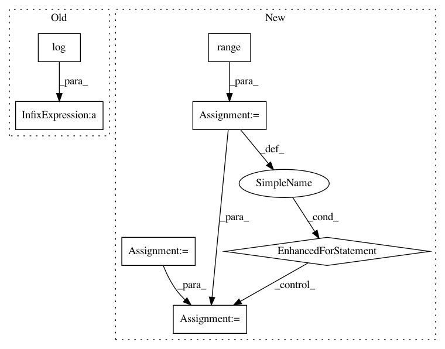

1a73a1367fedfa8368b6c42103e60e1b370bc14a,catalyst/contrib/criterion/focal_loss.py,FocalLoss,forward,#FocalLoss#Any#Any#,11
Before Change
)
max_val = (-outputs).clamp(min=0)
log_ = ((-max_val).exp() + (-outputs - max_val).exp()).log()
loss = outputs - outputs * targets + max_val + log_
invprobs = F.logsigmoid(-outputs * (targets * 2.0 - 1.0))
loss = (invprobs * self.gamma).exp() * loss
return loss.sum(dim=1).mean()
After Change
num_classes = logits.size(1)
loss = 0
targets = targets.view(-1)
logits = logits.view(-1, num_classes)
for cls in range(num_classes):
// Filter anchors with -1 label from loss computation
if cls == self.ignore:
continue
cls_label_target = targets[..., cls].long()
cls_label_input = logits[..., cls]
loss += sigmoid_focal_loss(
cls_label_input,
cls_label_target,
gamma=self.gamma,
alpha=self.alpha
)
return loss
__all__ = ["FocalLossBinary", "FocalLossMultiClass", "FocalLossMultiLabel"]
In pattern: SUPERPATTERN
Frequency: 3
Non-data size: 7
Instances
Project Name: Scitator/catalyst
Commit Name: 1a73a1367fedfa8368b6c42103e60e1b370bc14a
Time: 2019-04-19
Author: scitator@gmail.com
File Name: catalyst/contrib/criterion/focal_loss.py
Class Name: FocalLoss
Method Name: forward
Project Name: chainer/chainerrl
Commit Name: 3dc5c5719c2a56818f3c0c48f7268422a1f089c8
Time: 2016-05-22
Author: muupan@gmail.com
File Name: tests/test_policy_output.py
Class Name: TestGaussianPolicyOutput
Method Name: test_entropy
Project Name: geomstats/geomstats
Commit Name: be291b6a6ab8a663beac72fefa213bc7216a1617
Time: 2020-04-07
Author: hadizaatiti@gmail.com
File Name: geomstats/learning/frechet_mean.py
Class Name:
Method Name: _ball_gradient_descent